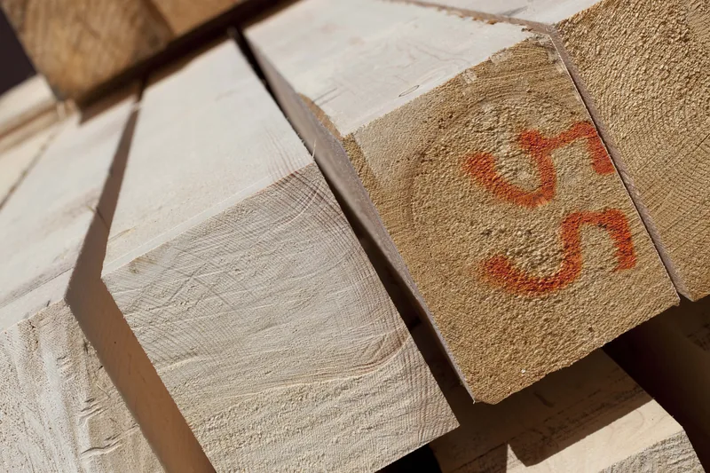

Tetti in legno massello
Un prodotto naturale, senza colle, che dura a lungo se impiegato bene. Il nostro viene in gran parte dalle foreste del Trentino certificate PEFC.

Dal bosco all'essiccatoio
Da sempre il legno massello dà alle case il suo calore e il suo profumo. Estremamente durevole se impiegato correttamente, è un prodotto naturale, privo di colle.
Il materiale che lavoriamo proviene in gran parte da foreste del Trentino certificate PEFC. Prima del taglio a controllo numerico viene stagionato nei nostri essiccatoi, per restare stabile una volta in opera.
Siamo stati tra le prime aziende trentine a ottenere la marcatura CE per la produzione di legno massello a uso strutturale.

Le essenze
Per le strutture in massello lavoriamo cinque legni. Quale usare lo decidiamo insieme, in base al lavoro.
- Abete
- Larice
- Douglasia
- Rovere
- Castagno
- Marcatura CE
- Legno massiccio a uso strutturale, classificato secondo la resistenza (UNI EN 14081-1).
- Qualificazione dal 2011
- Consiglio superiore dei lavori pubblici, per la lavorazione di elementi strutturali in massello e lamellare.
- PEFC
- Legno da foreste gestite in modo sostenibile. I certificati
Tetti in massello fatti da noi
Case in pietra, baite, alberghi, tettoie. Tutte le realizzazioni


Raccontateci il lavoro
Bastano due righe: che lavoro è, in che comune e più o meno che misure. Se avete un progetto o delle foto, meglio ancora. Poi vi richiamiamo noi.
Telefono 0465 621159 · info@segheria-lombardi.it